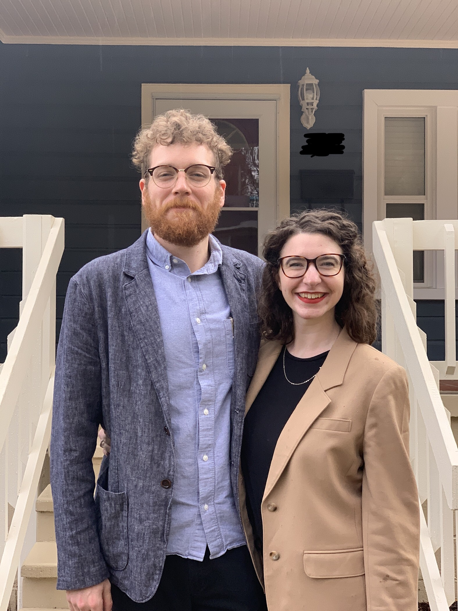
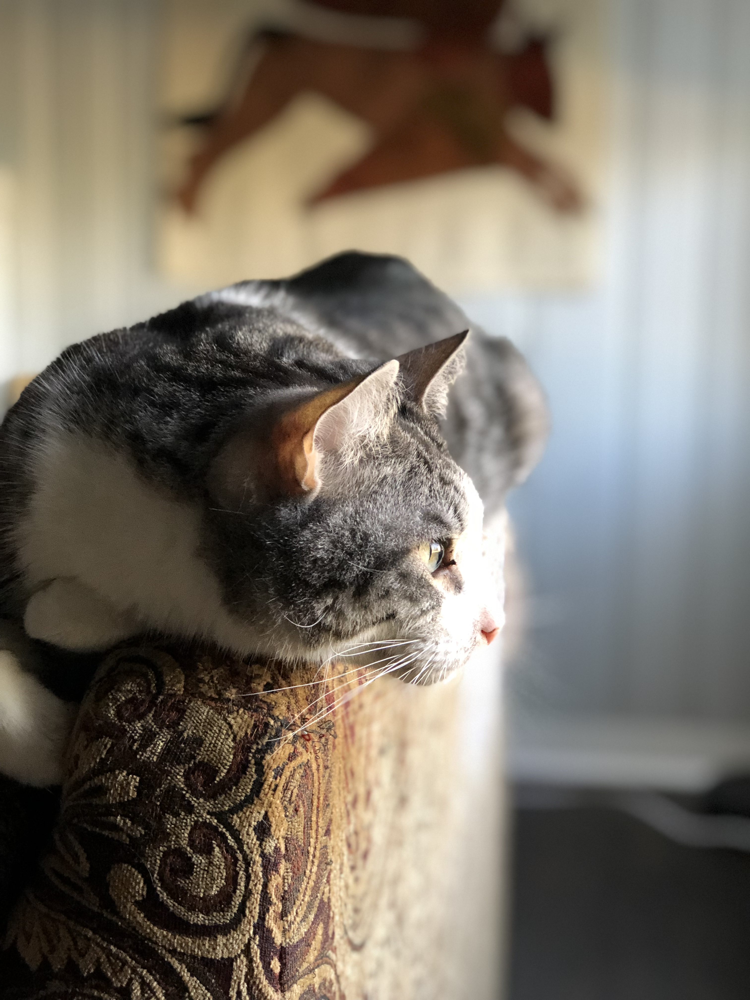

General Bio
I live in Birmingham. My wife and I have lived here for 4 years.
- I have been married to my wife, Katie, for 4 years.
- I am from Alabaster, Alabama.
- I am 28 years old.

My Most Recent Job
I decided to take this course after feeling burned out managing a cafe. All that free coffee was
really
nice!
- I used to work on an automatic Slayer espresso machine (reference photo below).
- Learned how to be a barista at Octane in Homewood.
- Became manager after a transition into Revelator.
Leisure
In my free time I love to write. I channel a lot of my creative energy into short stories and
modulars
for
Dungeons & Dragons.
- I Started playing D&D about 5 years ago.
- It combines my love for writiing with a creative outlet that prevents me from becoming a
recluse!
Yay for social activities!
- I have a campaign that I've been running with the same group for over a year as the dungeon
master.
Pets
My wife and I have two cats, Rook and Vespa
- Rook is 6 years old and Vespa is 7.
- My wife calls them her step cats since I had them before we were married.
- Rook is pictured below

Prior schooling
I attended UAB until last fall. I was in the English program. My focus was in literature. I studied
the
literature of the US for the majority of my time there.
- I attended Troy University before UAB.
- My favotire professor taught many of my American literature classes.
- His name is Vic Camp.

Favorite Books
My favorite literary movements are the modern and post-modern eras of American literature.
- Slaughterhouse 5 by Kurt Vonnegut
- Beware of Pity by Stefan Zweig
- Wyrd Sister by Terry Pratchett